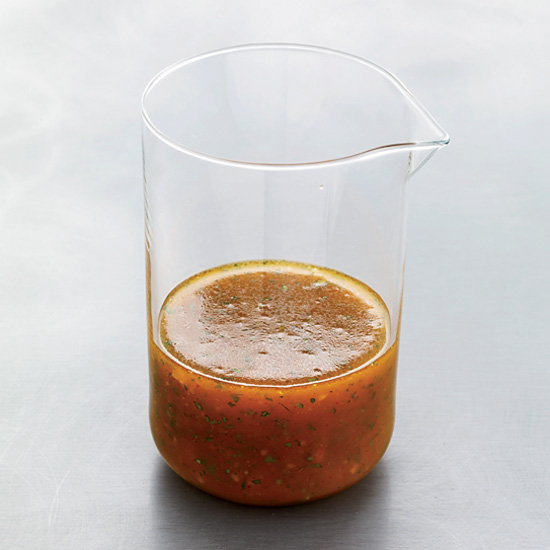

Smokey Orange Marmalade Vinaigrette

Description
This marmalade-sweetened dressing is quintessential Bobby Flay, with bold flavors that taste best with grain salads or grilled meat
Ingredients
¼ cup rice vinegar
2 ½ tablespoons orange marmalade
1 tablespoon water
1 teaspoon honey
½ teaspoon smoked paprika
½ small shallot (minced)
¼ cup extra-virgin olive oil
¼ cup extra-virgin olive oil
Kosher salt and freshly ground pepper
Steps
In a bowl, whisk the vinegar, marmalade, water, honey, paprika and shallot.
Slowly whisk in the oil
Stir in the parsley and season with salt and pepper.